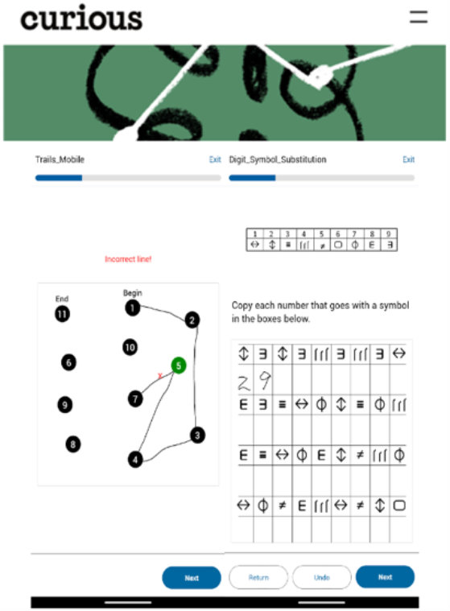

Monitoring experience and cognition — using a platform to build your own data collection, research, assessment, and intervention apps
I created Curious (gettingcurious.com, formerly "MindLogger") to enable anyone anywhere to create their own mobile/web applications for conducting end-to-end encrypted, remote data collection, assessments, cognitive tasks, and interventions. It is easy to use and rich with features (survey tools, audio/video recordings, drawing, geolocation, specialized millisecond-precision cognitive tasks, etc.). My primary use is for (1) ecological momentary assessments, to know what people are thinking, feeling, and how they are behaving in their daily lives, and (2) collecting performance task data in Curious alongside sensor data (EEG, EMG, electrodermal, movement, heart rate, eye tracking, pupillometry, etc.). The project has received over $10 million in funding from the State of California, NIH, MIT, Paris LPI, and Hearst, Stavros Niarchos, and Hirani foundations.